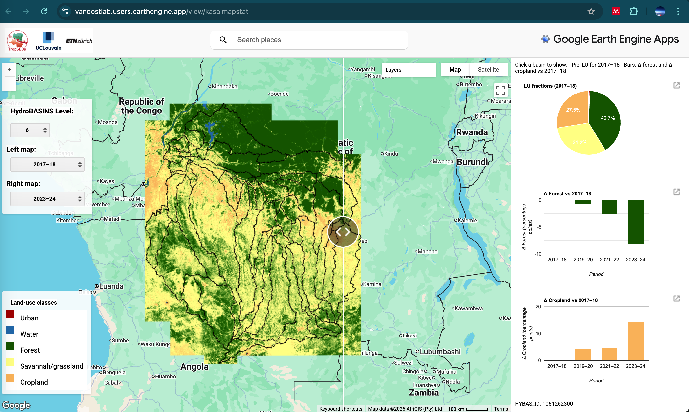
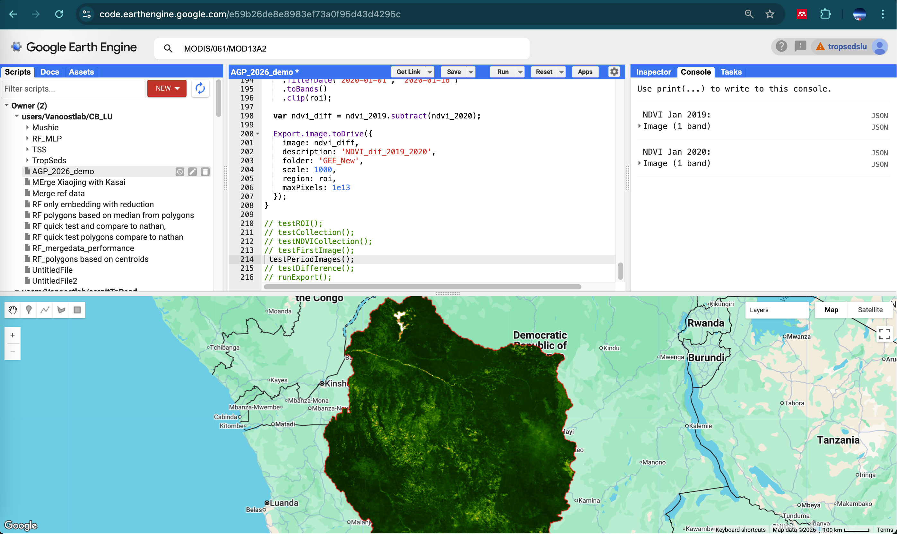

In this demo, we explore the Google Earth Engine (GEE) Code Editor, the main online environment for working with Earth observation data in Google Earth Engine.
The GEE Code Editor is a browser-based platform that allows users to access, process, visualize, and export very large geospatial datasets without downloading them locally first. Instead of working with files stored on your own computer, you work directly with data hosted in the cloud. This is one of the main differences compared with more traditional GIS workflows. Here is an example of a GEE application (Zhao & Carlier et al., in review):

General approach of Google Earth Engine
The philosophy of GEE is to bring the computation to the data, rather than bringing the data to your computer. Large satellite archives such as Landsat, Sentinel, MODIS, climate products, land-cover datasets, and many others are already available on Google’s servers. Users write relatively compact scripts to filter, combine, analyse, create new and visualize these datasets.
This makes GEE especially powerful for:
large regions
long time series
repetitive workflows
remote sensing analyses requiring many images
In practice you query image collections, apply filters in space and time, calculate indices or statistics, and visualize or export the result.
Main concepts
A few key concepts are central in Earth Engine.
Geometry / region of interest (ROI)
Most analyses begin by defining a study area, for example a point, polygon, watershed, or administrative boundary.
Image
An image is a raster dataset for one date or one layer, for example a Sentinel-2 scene or a DEM.
ImageCollection
An ImageCollection is a set of images, often through time, such as all MODIS NDVI images between 2019 and 2020.
Feature and FeatureCollection
These are vector objects, such as points, polygons, shapefiles, or training data.
Filtering and mapping
You often filter a collection by date, location, or metadata, and then apply a function to each image in the collection.
Visualization versus computation
Displaying a layer on the map is not the same as exporting or analysing it. Visualization is mainly for inspection; computation produces the actual outputs.
Structure of the GEE Code Editor
The Code Editor is organized around a few key panels:
the script panel, where you write JavaScript code
the map window, where you display layers
the Inspector, to click and explore values
the Console, where you print objects and messages
the Tasks tab, where exports are launched

This makes the environment very suitable for interactive experimentation: you can write a few lines of code, run them, inspect the result, and progressively build a workflow.
Advantages of the GEE Code Editor
The main advantages of Earth Engine are:
free access for non-commerical (eg academic) use
direct access to a very large catalog of remote sensing and environmental datasets
cloud computing, so there is no need to store or process everything locally
fast prototyping of workflows
easy repetition of the same analysis over large areas or long periods
strong support for time series analysis and large-scale remote sensing
easy sharing of scripts with collaborators or students
For teaching, GEE is especially useful because students can quickly move from theory to practice without complex software installation or data management.
Typical use cases
Typical applications of GEE include:
calculating vegetation indices such as NDVI
mapping land cover and land-use change
analysing drought, floods, fire, or deforestation
extracting time series for a study area
comparing satellite images between dates
building training datasets for classification
exporting maps or derived products for further analysis in a geoprocessing-workflow
NoteFurther resources
If you would like to continue exploring Google Earth Engine beyond this demo, the following resources are highly recommended:
Together, these resources offer tutorials, documentation, practical examples, and inspiring real-world applications of GEE in environmental and geospatial research.
1. Demo basic GEE
In this demo, we will use the following script (in-class activity):
2. Case Study Land cover classification based on Sentinel-2
In this case study, we use an existing reference land-use database that was created from ultra-high-resolution imagery for the city of Ilebo (DR Congo). In the section below, we use the GEE Python API to extract Sentinel-2 spectral bands for these reference polygons. The objective is to prepare the predictor data needed to build a Random Forest model, which we will develop in the next session. In other words, this section focuses on preparing the data required for Random Forest classification using the GEE Python API.
Note
You can run the code below in your preferred Python environment, or alternatively use the link to this Colab script.
To do so, you will need to be logged into your browser with your Google account and have an active Google Cloud project with Earth Engine enabled, as explained in last week’s assignment.
Note
Caution: the code below is Python code that will not run in RStudio!
# Calculate the histogram of the 'class' property to get counts for each unique classclass_counts_ee = feature_collection.aggregate_histogram('class')# Get the results from Earth Engineclass_counts_dict = class_counts_ee.getInfo()# Convert the dictionary to a pandas DataFrame for a tabular displayimport pandas as pdclass_counts_df = pd.DataFrame(list(class_counts_dict.items()), columns=['Class', 'Number of Polygons'])print("Summary of unique polygons per class:")
Summary of unique polygons per class:
print(class_counts_df.to_string(index=False))
Class Number of Polygons
built_up 212
cropland 361
forest 246
savannah 265
water 234
Visualize the feature_collection so we know what we are working with
import foliumimport ee# Define the color scheme for the 'class' propertyclassColors = ee.Dictionary({'water': '#1f78b4','built_up': '#e31a1c','cropland': '#e6ab02','forest': '#1b9e77','savannah': '#66a61e'})# Function to style features based on their 'class' propertydef style_by_class(feature): color = classColors.get(feature.get('class'))return feature.set({'style': {'color': color, 'width': 2}})# Apply stylingstyled_feature_collection = feature_collection.map(style_by_class)# Get centroid for centering the mapcenter_point = feature_collection.geometry().centroid().coordinates().getInfo()# Create map without default tilesm = folium.Map(location=[center_point[1], center_point[0]], zoom_start=11, tiles=None)# Add satellite basemapfolium.TileLayer( tiles='https://mt1.google.com/vt/lyrs=s&x={x}&y={y}&z={z}', attr='Google Satellite', name='Satellite', overlay=False, control=True).add_to(m)
<folium.raster_layers.TileLayer object at 0x13f7df710>
# Optional: add a normal map toofolium.TileLayer( tiles='OpenStreetMap', name='OpenStreetMap', overlay=False, control=True).add_to(m)
<folium.raster_layers.TileLayer object at 0x13f7df650>
Why this step? Sentinel-2 contains cloudy pixels. We mask clouds and cloud shadows using the SCL band from the Level-2A surface reflectance product. We use COPERNICUS/S2_SR_HARMONIZED, which is the recommended Earth Engine Sentinel-2 SR collection for a consistent time series.
def mask_s2_sr(image):"""Mask clouds and cloud shadows using the SCL band.""" scl = image.select("SCL") mask = ( scl.neq(3) # cloud shadow .And(scl.neq(8)) # medium probability cloud .And(scl.neq(9)) # high probability cloud .And(scl.neq(10)) # cirrus )return image.updateMask(mask).select(spectral_bands)def add_indices(image):"""Add NDVI, EVI and BSI.""" ndvi = image.normalizedDifference(["B8", "B4"]).rename("NDVI") evi = image.expression("2.5 * ((nir - red) / (nir + 6 * red - 7.5 * blue + 1))", {"nir": image.select("B8"),"red": image.select("B4"),"blue": image.select("B2"), }, ).rename("EVI") bsi = image.expression("((swir1 + red) - (nir + blue)) / ((swir1 + red) + (nir + blue))", {"swir1": image.select("B11"),"red": image.select("B4"),"nir": image.select("B8"),"blue": image.select("B2"), }, ).rename("BSI")return image.addBands([ndvi, evi, bsi])
final_year_image = annual_composites_int.filter(ee.Filter.eq("year", end_year)).first()image_export_scale =30task = ee.batch.Export.image.toDrive( image=final_year_image, description=f"Ilebo_S2_{end_year}_int_30m", folder="GEE_Exports_S2_Ilebo", fileNamePrefix=f"ilebo_s2_{end_year}_int_30m", region=roi, scale=image_export_scale, maxPixels=1e10, fileFormat="GeoTIFF", formatOptions={"cloudOptimized": True}, skipEmptyTiles=True)task.start()print(f"Export started for final year composite ({end_year}) at {image_export_scale} m.")
2.9 Export Polygon Band Values to Drive (Shapefile)
# Define the reducer to calculate the mean value within each polygon.reducer = ee.Reducer.mean()# Initialize an empty FeatureCollection to store all extracted polygon data.all_extracted_features = ee.FeatureCollection([])# Get the list of images from the annual composites.# We will iterate through these images client-side.images_list = annual_composites_int.toList(annual_composites_int.size())# Loop through each annual composite image.for i inrange(annual_composites_int.size().getInfo()): composite_image = ee.Image(images_list.get(i)) composite_year = composite_image.get('year').getInfo()# Filter the original feature_collection to get polygons that match the current composite's year. polygons_for_this_year = feature_collection.filter(ee.Filter.eq('year', composite_year))# Only proceed if there are polygons for the current year.if polygons_for_this_year.size().getInfo() >0:# Extract mean band values for the filtered polygons from the current annual composite.# reduceRegions adds properties for each band (e.g., 'B1_mean', 'NDVI_mean').# Original feature properties (like 'class', 'site') are preserved. extracted_values_for_year = composite_image.reduceRegions( collection=polygons_for_this_year, reducer=reducer, scale=export_scale )# Merge the results for this year into the overall collection. all_extracted_features = all_extracted_features.merge(extracted_values_for_year)print(f'Extracted values for {composite_year}: {extracted_values_for_year.size().getInfo()} features.')else:print(f'No polygons found with year property matching {composite_year}.')print(f'Total features with extracted values: {all_extracted_features.size().getInfo()}')# Export the final FeatureCollection as a Shapefile to Google Drive.export_task = ee.batch.Export.table.toDrive( collection=all_extracted_features, description='Ilebo_Polygon_Band_Values_SHP', folder='GEE_Exports_S2_Ilebo', # Use the same folder as the image exports fileNamePrefix='ilebo_polygon_band_values', fileFormat='SHP'# Export as a Shapefile)export_task.start()print('Export task started for polygon band values to Google Drive (Shapefile).')